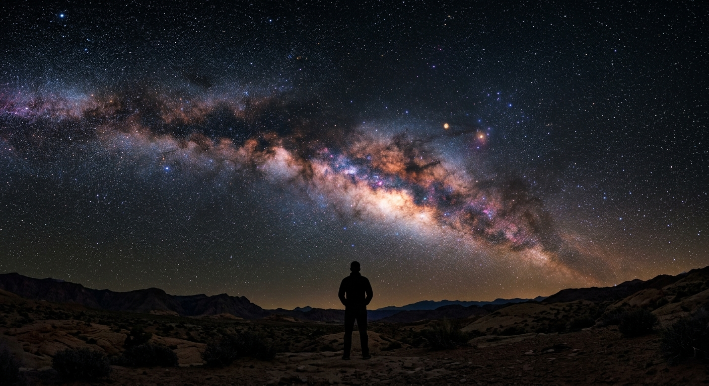

Documenting a beginner's journey to understand the universe.
I've always looked up at the night sky and felt a profound sense of "not knowing." This project isn't about professional astrophysics—it's a field journal of a curious mind trying to grasp the infinite.
From the dance of subatomic particles to the expansion of galaxy clusters, join me as I map out the cosmos one question at a time.

Core concepts shaping our understanding of the universe's origin, structure, and fate.
Before stars or galaxies existed, the universe was a dense, searing plasma. Approximately 380,000 years after the singularity, space cooled enough for light to travel freely, creating the Cosmic Microwave Background (CMB)—the oldest light in existence.
Standard atomic matter only accounts for about 5% of the cosmos. Dark Matter, an unknown transparent substance that does not emit or absorb light, constitutes roughly 27% of the universe, holding spinning galaxies together with its enormous gravity.
The primordial universe only contained hydrogen, helium, and trace lithium. Every heavier element—including the carbon in our cells and the iron in our blood—was forged in the nuclear furnaces of dying stars and massive stellar explosions.
On the largest scale, the universe looks like a network of gas and dark matter filaments separated by immense voids. Galaxies and clusters cluster tightly at the intersections of these cosmic webs, expanding continuously into the darkness.
Deeper structural mechanisms of gravitational physics and expanding space.
Space and time are not separate, static backgrounds. Instead, they form a single, four-dimensional fabric called Spacetime. Massive bodies like stars and black holes warp this fabric, curving the paths of passing light and matter. This curvature is what we perceive as gravity.
To explain why the universe looks homogeneous and flat in all directions, cosmic inflation posits that in the first fraction of a second, space underwent immensely rapid, exponential expansion. This expansion stretched subatomic fluctuations into massive galactic web scales.